Exercise Solutions
Exercise 1 Solutions
Exercise 1A Solutions
1. Create a new file in your working directory called Ex1A.R.
Go to File > New File > R Script. This will create an untitled R script. Go the File > Save, give it the appropriate name and click Save. If your working directory is already set to C:/Users/YOU/Documents/R-Book/Chapter1, then the file will be saved there by default.
You can create a new script using CTRL + SHIFT + N as well.
2. Enter these data (found in Table 1.1) into vectors. Call the vectors whatever you would like. Should you enter the data as vectors by rows, or by columns? (Hint: remember the properties of vectors).
Because you have both numeric and character data classes for a single row, you should enter them by columns:
Lake = c("Big", "Small", "Square", "Circle")
Area = c(100, 25, 45, 30)
Time = c(1000, 1200, 1400, 1600)
Fish = c(643, 203, 109, 15)3. Combine your vectors into a data frame. Why should you use a data frame instead of a matrix?
You should use a data frame because, unlike matrices, they can store multiple data classes in the different columns. Refer back the sections on matrices (Section 1.4.3) and data frames (Section 1.4.4) for more details.
4. Subset all of the data from Small Lake.
Refer back to Section 1.7 for details on subsetting using indices and by column names, see Section 1.11 for details on logical subsetting.
5. Subset the area for all of the lakes.
Refer to the suggestions for question 4 for more details.
6. Subset the number of fish for Big and Square Lakes only.
Refer to the suggestions for question 4 for more details.
7. You realize that you sampled 209 fish at Square Lake, not 109. Fix the mistake. There are two ways to do this, can you think of them both? Which do you think is better?
The two methods are:
- Fix the mistake in the first place it appears: when you made the
Fishvector. If you change it there, all other instances in your code where you use theFishobject will be fixed after you re-run everything.
- Fix the cell in the data frame only:
The second method would only fix the data frame, so if you wanted to use the vector Fish outside of the data frame, the error would still be present. For this reason, the first method is likely better.
8. Save your script. Close RStudio and re-open your script to see that it was saved.
File > Save or CTRL + S
Exercise 1B Solutions
First, did you find the error? It is the #VALUE! entry in the chao column. You should have R treat this as an NA. The two easiest ways to do this are to either enter NA in that cell or delete its contents. You can do this easily by opening ponds.csv in Microsoft Excel or some other spreadsheet editor.
1. Read in the data to R and assign it to an object.
After placing ponds.csv (and all of the other data files) in the location C:/Users/YOU/Documents/R-Book/Data and creating Ex1B.R in your working directory:
2. Calculate some basic summary statistics of your data using the summary() function.
3. Calculate the mean chlorophyll a for each pond (Hint: pond is a grouping variable).
Remember the tapply() function. The first argument is the variable you wish to calculate a statistic for (chlorophyll), the second argument is the grouping variable (pond), and the third argument is the function you wish to apply.
4. Calculate the mean number of Chaoborus for each treatment in each pond using tapply(). (Hint: You can group by two variables with: tapply(dat$var, list(dat$grp1, dat$grp2), fun).
The hint pretty much gives this one away:
5. Use the more general apply() function to calculate the variance for each zooplankton taxa found only in pond S-28.
First, subset only the correct pond and the zooplankton counts. Then, specify you want the var() function applied to the second dimension (columns). Finally, because chao has an NA, you’ll need to include the na.rm = T argument.
6. Create a new variable called prod in the data frame that represents the quantity of chlorophyll a in each replicate. If the chlorophyll a in the replicate is greater than 30 give it a “high”, otherwise give it a “low”. (Hint: are you asking R to respond to one question or multiple questions? How should this change the strategy you use?)
Remember, you can add a new column to a data set using the df$new_column = something(). If the column new_column doesn’t exist, it will be added. If it exists already, it will be written over. You can use ifelse() (not if()!) to ask if each chlorophyll measurement was greater or less than 30, and to do something differently based on the result:
Bonus 1. Use ?table to figure out how you can use table() to count how many observations of high and low there were in each treatment (Hint: table() will have only two arguments.).
After looking through the help file, you should have seen that table() has a ... as its first argument. After reading about what it takes there, you would see it is expecting:
one or more objects which can be interpretted as factors (including character strings)…
So if you ran:
##
## Add Control
## high 8 0
## low 2 10You would get a table showing how many high and low chlorophyll observations were made for each treatment.
Bonus 2. Create a new function called product() that multiplies any two numbers you specify.
See Section 1.14 for more details on user-defined functions. Your function might look like this:
## [1] 20Bonus 3. Modify your function to print a message to the console and return the value if() it meets a condition and to print another message and not return the value if it doesn’t.
product = function(a,b,z) {
result = a * b
if (result <= z) {
cat("The result of a * b is less than", z, "so you don't care what it is")
} else {
cat("The result of a * b is", result, "\n")
result
}
}
product(4, 5, 19)## The result of a * b is 20## [1] 20## The result of a * b is less than 30 so you don't care what it isThe use of cat() here is similar to print(), but it is better for printing messages to the console.
Exercise 2 Solutions
1. Create a new R script called Ex2.R and save it in the Chapter2 directory. Read in the data set sockeye.csv. Produce a basic summary of the data and take note of the data classes, missing values (NA), and the relative ranges for each variable.
File > New File > R Script, then File > Save > call it Ex2.R > Save. Then:
2. Make a histogram of fish weights for only hatchery-origin fish. Set breaks = 10 so you can see the distribution more clearly.
3. Make a scatter plot of the fecundity of females as a function of their body weight for wild fish only. Use whichever plotting character (pch) and color (col) you wish. Change the main title and axes labels to reflect what they mean. Change the x-axis limits to be 600 to 3000 and the y-axis limits to be 0 to 3500. (Hint: The NAs will not cause a problem. R will only use points where there are paired records for both x and y and ignore otherwise).
plot(fecund ~ weight, data = dat[dat$type == "wild",],
main = "Fecundity vs. Weight",
pch = 17, col = "red", cex = 1.5,
xlab = "Weight (g)", xlim = c(600, 3000),
ylab = "Fecundity (#eggs)", ylim = c(0, 3500))All of these arguments are found in Table 2.1.
4. Add points that do the same thing but for hatchery fish. Use a different plotting character and a different color.
5. Add a legend to the plot to differentiate between the two types of fish.
legend("bottomright",
legend = c("Wild", "Hatchery"),
col = c("blue", "red"),
pch = c(15, 17),
bty = "n",
pt.cex = 1.5
)Make sure the correct elements of the legend, col, and pch arguments match the way they were specified in the plot() and lines() calls!
6. Make a multi-panel plot in a new window with box-and-whisker plots that compare (1) spawner weight, (2) fecundity, and (3) egg size between hatchery and wild fish. (Hint: each comparison will be on its own panel). Change the titles of each plot to reflect what you are comparing.
vars = c("weight", "fecund", "egg_size")
par(mfrow = c(1,3))
sapply(vars, function(v) {
plot(dat[,v] ~ dat[,"type"], xlab = "", ylab = v)
})7. Save the plot as a .png file in your working directory with a file name of your choosing.
One way to do this:
ppi = 600
png("SockeyeComparisons.png", h = 5 * ppi, w = 7 * ppi, res = ppi)
par(mfrow = c(1,3))
sapply(vars, function(v) {
plot(dat[,v] ~ dat[,"type"], xlab = "", ylab = v)
})
dev.off()Bonus 1. Make a bar plot comparing the mean survival to eyed-egg stage for each type of fish (hatchery and wild). Add error bars that represent 95% confidence intervals.
First, adapt the calc_se() function to be able to cope with NAs:
calc_se = function(x, na.rm = F) {
# include a option to remove NAs before calculating SE
if (na.rm) x = x[!is.na(x)]
sqrt(sum((x - mean(x))^2)/(length(x)-1))/sqrt(length(x))
}Then, calculate the mean and standard error for the % survival to the eyed-egg stage:
mean_surv = tapply(dat$survival, dat$type, mean, na.rm = T)
se_surv = tapply(dat$survival, dat$type, calc_se, na.rm = T)Then, get the 95% confidence interval:
Finally, plot the means and intervals:
mp = barplot(mean_surv, ylim = c(0, max(upr_ci_surv)))
arrows(mp, lwr_ci_surv, mp, upr_ci_surv, length = 0.1, code = 3, angle = 90)Bonus 2. Change the names of each bar, the main plot title, and the y-axis title.
mp = barplot(mean_surv, ylim = c(0, max(upr_ci_surv)),
main = "% Survival to Eyed-Egg Stage by Origin",
ylab = "% Survival to Eyed-Egg Stage",
names.arg = c("Hatchery", "Wild"))
arrows(mp, lwr_ci_surv, mp, upr_ci_surv, length = 0.1, code = 3, angle = 90)Bonus 3. Adjust the margins so there are 2 lines on the bottom, 5 on the left, 2 on the top, and 1 on the right.
Place this line above your barplot(...) code:
Exercise 3 Solutions
1. Perform the same analyses as conducted in Section 3.1 (simple linear regression, ANOVA, ANCOVA, ANCOVA with interaction), using egg_size as the response variable. The predictor variables you should use are type (categorical) and year. You should plot the fit for each model separately and perform an AIC analysis. Practice interpretting the coefficient estimates.
First, read in the data:
# regression
fit1 = lm(egg_size ~ year, data = dat)
# anova
fit2 = lm(egg_size ~ type, data = dat)
# ancova
fit3 = lm(egg_size ~ year + type, data = dat)
# ancova with interaction
fit4 = lm(egg_size ~ year * type, data = dat)2. Perform the same analyses as conducted in Section 3.2, this time using a success being having greater than 80% survival to the eyed-egg stage. Use egg_size and type as the predictor variables. You should plot the fitted lines for each model separately and perform an AIC analysis. Practice interpretting the coefficient estimates.
dat$binary = ifelse(dat$survival < 80, 0, 1)
fit1 = glm(binary ~ egg_size, data = dat, family = binomial)
fit2 = glm(binary ~ type, data = dat, family = binomial)
fit3 = glm(binary ~ egg_size + type, data = dat, family = binomial)
fit4 = glm(binary ~ egg_size * type, data = dat, family = binomial)3. Make the same graphic as in Figure 3.1 with at least one of the other distributions listed in Table 3.1 (other than the multinomial - being a multivariate distribution, it wouldn’t work well with this code). Try thinking of a variable from your work that meets the uses of each distribution in Table 3.1 (or one that’s not listed). If you run into trouble, check out the help file for that distribution.
This example uses the lognormal distribution, with meanlog = 10 and sdlog = 0.25:
# parameters
meanlog = 10; sdlog = 0.25
# a sequence of possible random variables (fish lengths)
lengths = seq(0, 8e4, length = 100)
# a sequence of possible cumulative probabilities
cprobs = seq(0, 1, length = 100)
densty = dlnorm(x = lengths, meanlog, sdlog) # takes specific lengths
cuprob = plnorm(q = lengths, meanlog, sdlog) # takes specific lengths
quants = qlnorm(p = cprobs, meanlog, sdlog) # takes specific probabilities
random = rlnorm(n = 1e4, meanlog, sdlog) # takes a number of random deviates to make
# set up plotting region: see ?par for more details
# notice the tricks to clean up the plot
par(
mfrow = c(2,2), # set up 2x2 regions
mar = c(3,3,3,1), # set narrower margins
xaxs = "i", # remove "x-buffer"
yaxs = "i", # remove "y-buffer"
mgp = c(2,0.4,0), # bring in axis titles ([1]) and tick labels ([2])
tcl = -0.25 # shorten tick marks
)
plot(densty ~ lengths, type = "l", lwd = 3, main = "dlnorm()",
xlab = "Random Variable", ylab = "Density", las = 1)
plot(cuprob ~ lengths, type = "l", lwd = 3, main = "plnorm()",
xlab = "Random Variable", ylab = "Cumulative Probability", las = 1)
plot(quants ~ cprobs, type = "l", lwd = 3, main = "qlnorm()",
xlab = "P", ylab = "P Quantile Random Variable", las = 1)
hist(random, breaks = 50, col = "grey", main = "rlnorm()",
xlab = "Fish Length (mm)", ylab = "Frequency", las = 1)
box() # add borders to the histogram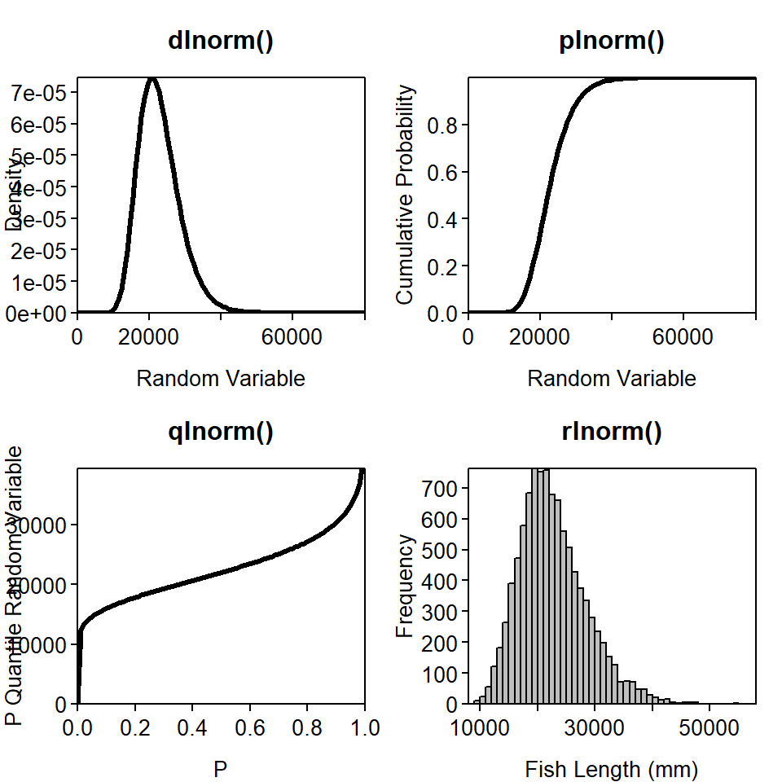
Bonus 1. Fit a von Bertalannfy growth model to the data found in the growth.csv data file. Visit Section 4.7.1 (particularly Equation (4.2)) for details on this model. Use the initial values: linf = 600, k = 0.3, t0 = -0.2. Plot the fitted line over top of the data.
Read in the data:
Fit the model:
fit = nls(length ~ linf * (1 - exp(-k * (age - t0))),
data = dat, start = c(linf = 600, k = 0.3, t0 = -0.2))Plot the fit:
ages = seq(min(dat$age), max(dat$age), length = 100)
pred_length = predict(fit, newdata = data.frame(age = ages))
plot(length ~ age, data = dat)
lines(pred_length ~ ages, lwd = 3)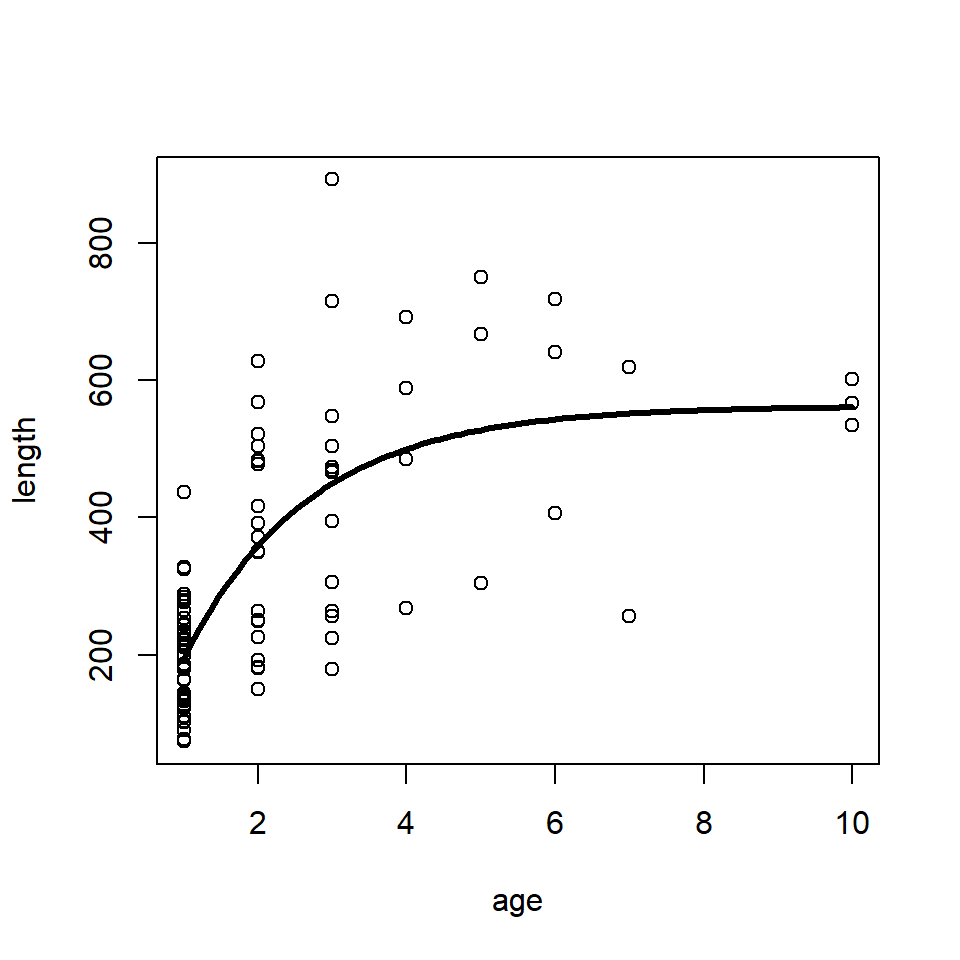
Exercise 4 Solutions
Exercise 4A Solutions
1. Simulate flipping an unfair coin (probability of heads = 0.6) 100 times using rbinom(). Count the number of heads and tails.
flips = rbinom(n = 100, size = 1, prob = 0.6)
flips = ifelse(flips == 1, "heads", "tails")
table(flips)2. Simulate flipping the same unfair coin 100 times, but using sample() instead. Determine what fraction of the flips resulted in heads.
flips = sample(x = c("heads", "tails"), size = 100, replace = T, prob = c(0.6, 0.4))
table(flips)["heads"]/length(flips)3. Simulate rolling a fair 6-sided die 100 times using sample(). Determine what fraction of the rolls resulted in an even number.
4. Simulate rolling the same die 100 times, but use the function rmultinom() instead. Look at the help file for details on how to use this function. Determine what fraction of the rolls resulted in an odd number.
Exercise 4B Solutions
1. Adapt this example to investigate another univariate probability distribution, like -lnorm(), -pois(), or -beta(). See the help files (e.g., ?rpois) for details on how to use each function.
This solution uses the rbeta(), qbeta(), and pbeta() functions. These are for the beta distribution, which has random variables that are between zero and one.
First, create the parameters of the distribution of interest:
mean_p = 0.6 # the mean of the random variable
B_sum = 100 # controls the variance: bigger values are lower variance
# get the shape parameters of the beta dist
beta_shape = c(mean_p * B_sum, (1 - mean_p) * B_sum)Then, generate random samples from this distribution:
Then, test the qbeta() function:
p = seq(0.01, 0.99, 0.01)
random_q = quantile(random, p)
beta_q = qbeta(p, beta_shape[1], beta_shape[2])
plot(beta_q ~ random_q); abline(c(0,1))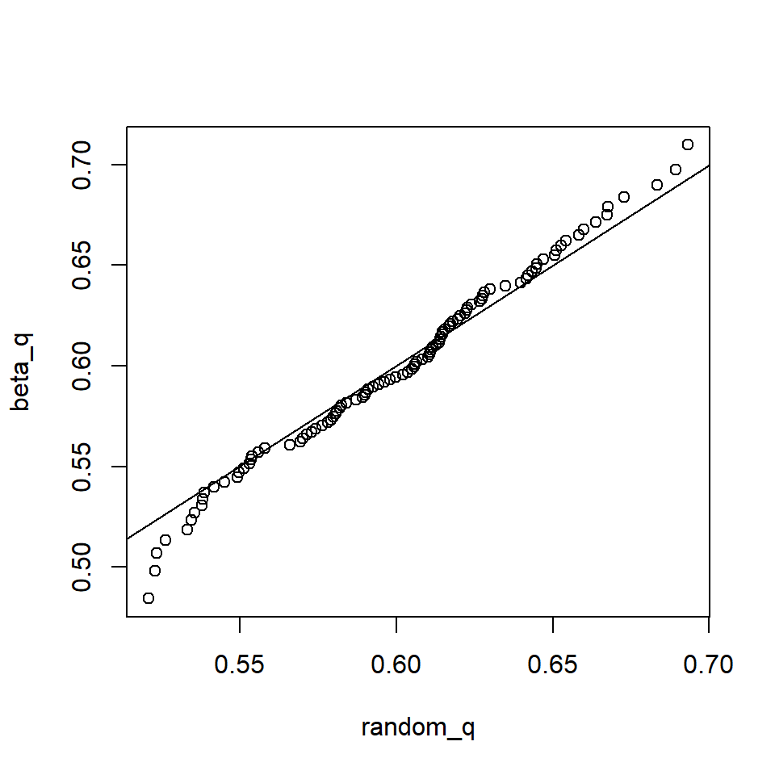
Then, test the `pbeta() function:
q = seq(0, 1, 0.05)
random_cdf = ecdf(random)
random_p = random_cdf(q)
beta_p = pbeta(q, beta_shape[1], beta_shape[2])
plot(beta_p ~ q, type = "l", col = "blue")
points(random_p ~ q, col = "red")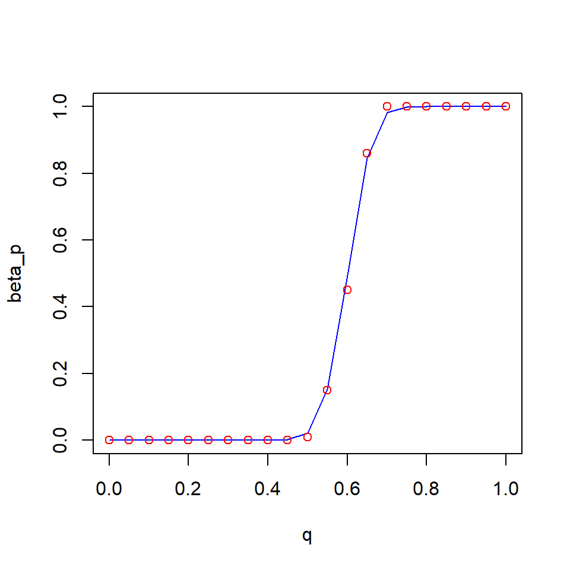
Exercise 4C Solutions
1. What sample size n do you need to have a power of 0.8 of detecting a significant difference between the two tagging methods?
Simply increase the maximum sample size considered and re-run the whole analysis:
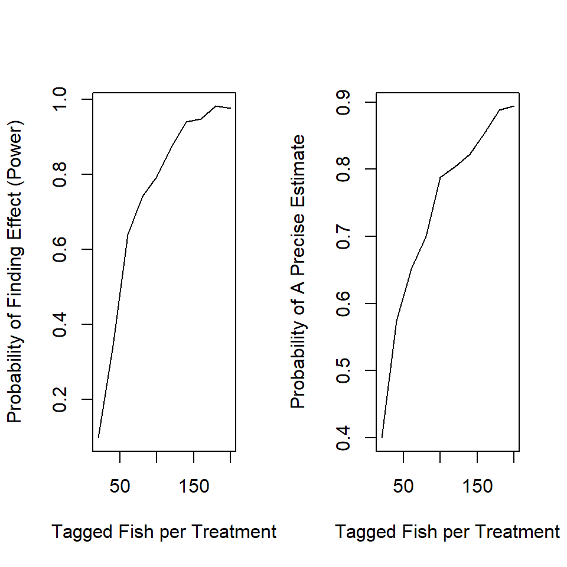
It appears you need about 100 fish per treatment to be able to detect an effect of this size.
2. How do the inferences from the power analysis change if you are interested in p_new = 0.4 instead of p_new = 0.25? Do you need to tag more or fewer fish in this case?
This is a argument to your function, so simply change its setting when you execute the analysis:
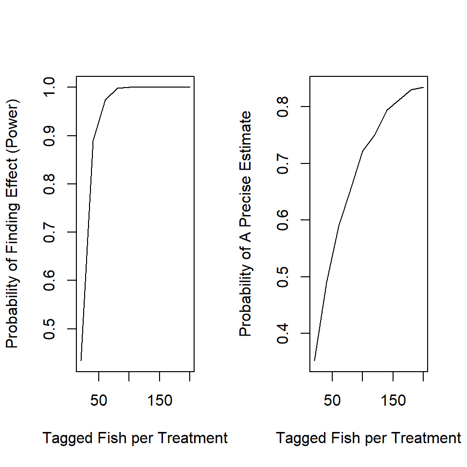
Because the effect is larger, it is easier to detect with fewer observations.
3. Your analysis takes a bit of time to run so you are interested in tracking its progress. Add a progress message to your nested for() loop that will print the sample size currently being analyzed.
Simply insert the cat() line in the appropriate place in your loop. This is a handy trick for long-running simulations.
Exercise 4D Solutions
1. Add an argument to ricker_sim() that will give the user an option to create a plot that shows the time series of recruitment, harvest, and escapement all on the same plot. Set the default to be to not plot the result, in case you forget to turn it off before performing the Monte Carlo analysis.
Change your function to look something like this:
ricker_sim = function(ny, params, U, plot = F) {
# extract the parameters out by name:
alpha = params["alpha"]
beta = params["beta"]
sigma = params["sigma"]
# create containers:
# yep, you can do this
R = S = H = NULL
# initialize the population in the first year
# start the population at being fished at 40%
# with lognormal error
R[1] = log(alpha * (1 - 0.4))/(beta * (1 - 0.4)) * exp(rnorm(1, 0, sigma))
S[1] = R[1] * (1 - U)
H[1] = R[1] * U
# carry simulation forward through time
for (y in 2:ny) {
# use the ricker function with random lognormal white noise
R[y] = S[y-1] * alpha * exp(-beta * S[y-1] + rnorm(1, 0, sigma))
#harvest and spawners are the same as before
S[y] = R[y] * (1 - U)
H[y] = R[y] * U
}
if (plot) {
# the I() lets you calculate a quantity within the plot call
plot(I(R/1e6) ~ seq(1,ny), type = "l", col = "black",
xlab = "Year", ylab = "State (millions of fish)",
ylim = range(c(R, S, H)/1e6) + c(0,0.2))
lines(I(S/1e6) ~ seq(1,ny), col = "blue")
lines(I(H/1e6) ~ seq(1,ny), col = "red")
legend("top", legend = c("R", "S", "H"), lty = 1, bty = "n",
col = c("black", "blue", "red"), horiz = T)
}
# wrap output in a list object
list(
mean_H = mean(H),
mean_S = mean(S)
)
}Then use the function:
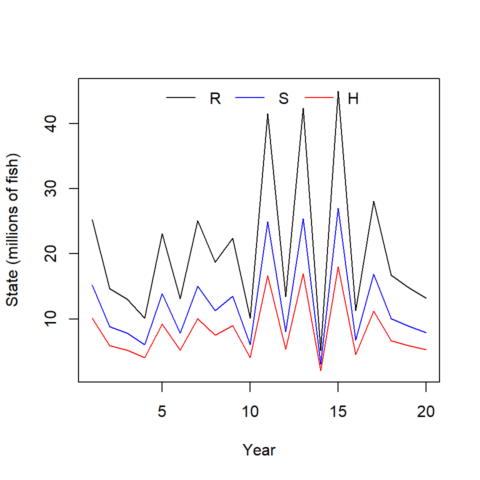
## $mean_H
## [1] 8145890
##
## $mean_S
## [1] 122188352. Add an error handler to ricker_sim() that will cause the function to return an error if() the names of the vector passed to the param argument aren’t what the function is expecting. You can use stop(“Error Message Goes Here”) to have your function stop and return an error.
Error handlers are useful: they catch common errors that someone might make when using your function and return and informative error. Insert this at the top of your function:
if (!all(names(params) %in% c("alpha", "beta", "sigma"))) {
stop("the `params` argument must take a named vector
with three elements: 'alpha', 'beta', and 'sigma'")
}This says, if not all of the names of the params argument are in the specified vector, then stop the execution of the function and return the error message.
3. How do the results of the trade-off analysis differ if the process error was larger (a larger value of \(\sigma\))?
Simply increase the process error variance term (the sigma element of params) to be 0.6 and re-run the analysis:
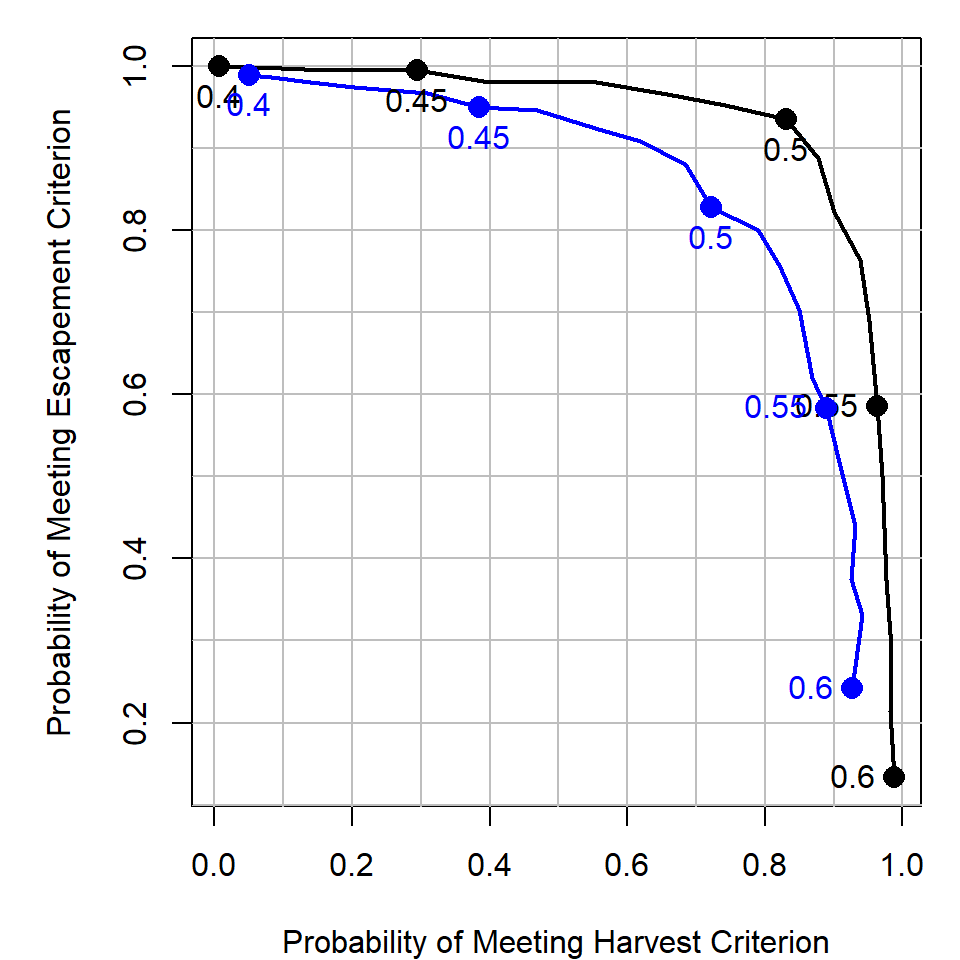
The blue line is the higher process error scenario. It seems that if the process error was higher, you would need to sacrifice more in the escapement objective to obtain the same level of the harvest objective than in the case with lower process error. This makes sense: more variability means more iterations will have escapement less than the criterion.
4. Add implementation error to the harvest policy. That is, if the target exploitation rate is \(U\), make the real exploitation rate in year \(y\) be: \(U_y \sim Beta(a,b)\), where \(a = 50U\) and \(b = 50(1-U)\). You can make there be more implementation error by inserting a smaller number other than 50 here. How does this affect the trade-off analysis?
For this, add a B_sum argument to your function (this represents the 50 value in the question) and use a different randomly generated exploitation rate each year according to the directions:
You can use this instead of a fixed exploitation rate each year, for example:
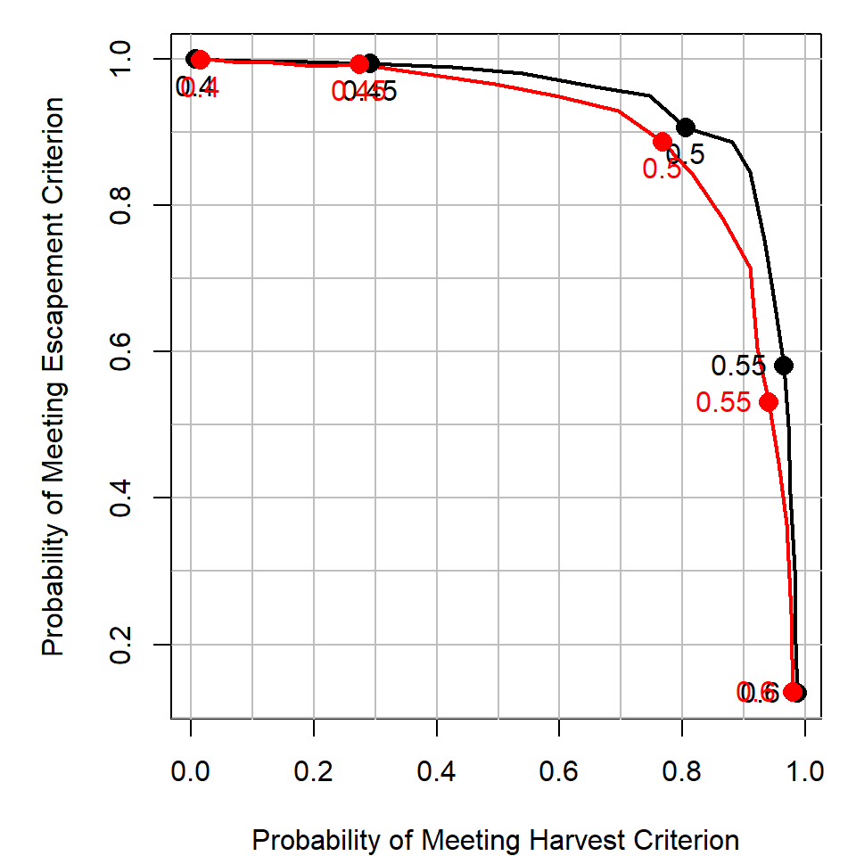
The red line has B_sum = 50 and the black line has B_sum = 1e6 (really large B_sum reduces the variance of U_real around U). It appears that introducing random implementation errors has a similar effect as increasing the process variance. To acheive the same harvest utility as the case with no implementation error, you need to be willing to sacrifice more in terms of escapement utility.
See what happens if you increase or decrease the amount of implementation error the management system has in acheiving a target exploitation rate.
5. Visually show how variable beta random variable is with B_sum = 50.
Here are two ways that come to mind:
# boxplots at various levels of U target
B_sum = 50
out = sapply(U_try, function(x) {
rbeta(n = 1000, x * B_sum, B_sum * (1 - x))
})
colnames(out) = U_try
boxplot(out, outline = F, col = "goldenrod1")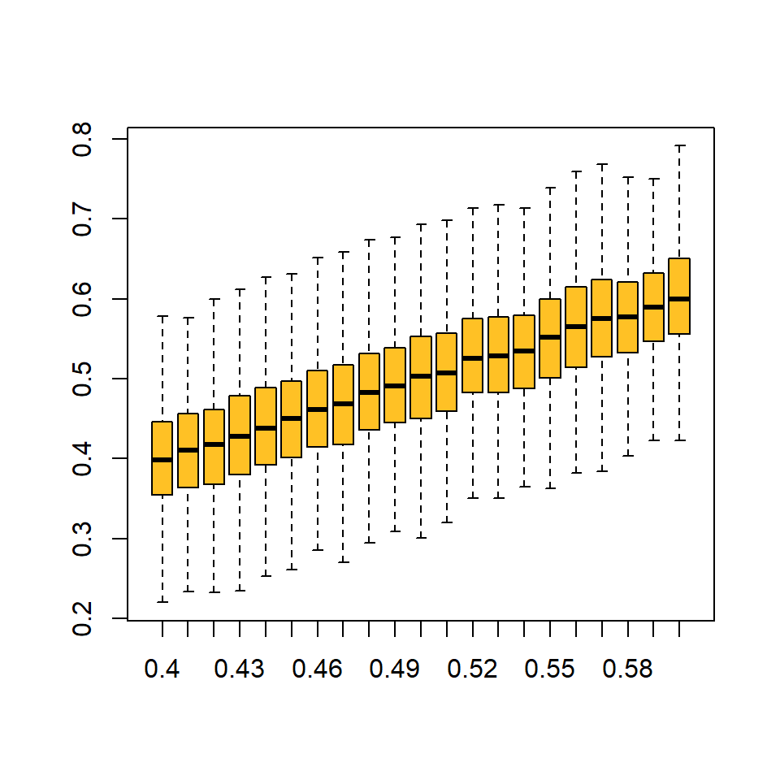
# a time series at one level of U target
U = 0.50
plot(rbeta(20, U * B_sum, B_sum * (1 - U)), type = "b", col = "red", pch = 15)
abline(h = U, col = "blue", lty = 2, lwd = 2)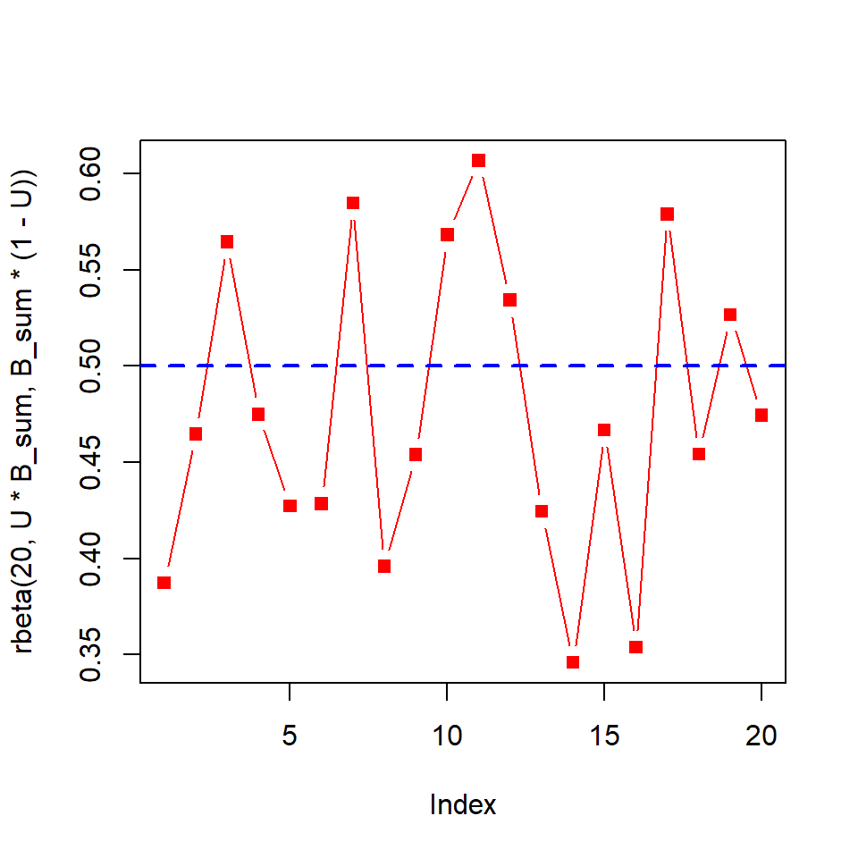
Exercise 4E Solutions
1. Replicate the bootstrap analysis but adapted for the linear regression example in Section 3.1.1. Stop at the step where you summarize the 95% interval range.
First, read in the sockeye.csv data set:
Then, copy the three functions and change the model to be a linear regression for these data:
randomize = function(dat) {
# number of observed pairs
n = nrow(dat)
# sample the rows to determine which will be kept
keep = sample(x = 1:n, size = n, replace = T)
# retreive these rows from the data
dat[keep,]
}
fit_lm = function(dat) {
lm(fecund ~ weight, data = dat)
}
# create a vector of weights
weights = seq(min(dat$weight, na.rm = T),
max(dat$weight, na.rm = T),
length = 100)
pred_lm = function(fit) {
# extract the coefficients
ests = coef(fit)
# predict length-at-age
ests["(Intercept)"] + ests["weight"] * weights
}Then perform the bootstrap by replicating these functions many times:
Finally, summarize and plot them:
summ = apply(out, 1, function(x) c(mean = mean(x), quantile(x, c(0.025, 0.975))))
plot(summ["mean",] ~ weights, type = "l", ylim = range(summ))
lines(summ["2.5%",] ~ weights, col = "grey")
lines(summ["97.5%",] ~ weights, col = "grey")2. Compare the 95% bootstrap confidence intervals to the intervals you get by running the predict function on the original data set with the argument interval = "confidence" set.
You can obtain these same intervals using the predict() function:
pred = predict(lm(fecund ~ weight, data = dat),
newdata = data.frame(weight = weights),
interval = "confidence")Plot them over top of the bootstrap intervals to verify the bootstrap worked right:
The intervals should look approximately correct.
Exercise 4F Solutions
1. Adapt the code to perform a permutation test for the difference in each of the zooplankton densities between treatments. Don’t forget to fix the missing value in the chao variable. See Exercise 2 for more details on this.
Read in the data:
Calculate the difference in means between the treatments for each zooplankton taxon:
Dobs_daph = mean(dat$daph[dat$treatment == "Add"]) -
mean(dat$daph[dat$treatment == "Control"])
Dobs_bosm = mean(dat$bosm[dat$treatment == "Add"]) -
mean(dat$bosm[dat$treatment == "Control"])
Dobs_cope = mean(dat$cope[dat$treatment == "Add"]) -
mean(dat$cope[dat$treatment == "Control"])
Dobs_chao = mean(dat$chao[dat$treatment == "Add"], na.rm = T) -
mean(dat$chao[dat$treatment == "Control"], na.rm = T)You can use the same perm() function from the chapter to perform this analysis, except you should add an na.rm argument. All you need to change is the variables you pass to y:
perm = function(x, y, na.rm = T) {
# turn x to a character, easier to deal with
x = as.character(x)
# shuffle the x values:
x_shuff = sample(x)
# calculate the mean of each group:
x_bar_add = mean(y[x_shuff == "Add"], na.rm = na.rm)
x_bar_ctl = mean(y[x_shuff == "Control"], na.rm = na.rm)
# calculate the difference:
x_bar_add - x_bar_ctl
}Then, run the permutation test on each taxon separately:
Dnull_daph = replicate(n = 5000, expr = perm(x = dat$treatment, y = dat$daph))
Dnull_bosm = replicate(n = 5000, expr = perm(x = dat$treatment, y = dat$bosm))
Dnull_cope = replicate(n = 5000, expr = perm(x = dat$treatment, y = dat$cope))
Dnull_chao = replicate(n = 5000, expr = perm(x = dat$treatment, y = dat$chao, na.rm = T))Then, create the histograms for each species showing the null distribution and the observed difference:
par(mfrow = c(1,4), mar = c(2,0,2,0))
hist(Dnull_daph, col = "skyblue", main = "DAPH", yaxt = "n")
abline(v = Dobs_daph, col = "red", lwd = 3)
hist(Dnull_bosm, col = "skyblue", main = "BOSM", yaxt = "n")
abline(v = Dobs_bosm, col = "red", lwd = 3)
hist(Dnull_cope, col = "skyblue", main = "COPE", yaxt = "n")
abline(v = Dobs_cope, col = "red", lwd = 3)
hist(Dnull_chao, col = "skyblue", main = "CHAO", yaxt = "n")
abline(v = Dobs_chao, col = "red", lwd = 3)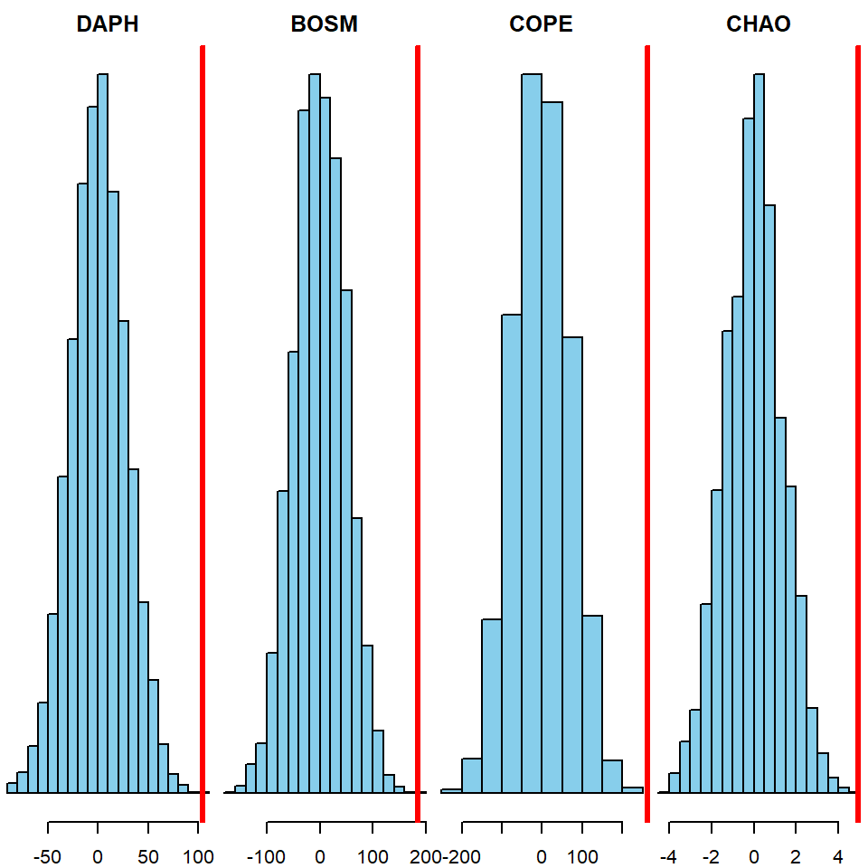
Finally, calculate the two-tailed hypothesis tests:
## [1] 0## [1] 2e-04## [1] 0## [1] 0It appears that the zooplankton densities differed significantly between treatments for each taxon.
2. Adapt the code to perform a permutation test for another data set used in this book where there are observations of both a categorical variable and a continuous variable. The data sets sockeye.csv, growth.csv, or creel.csv should be good starting points.
This example will test the difference in mean length between age 3 and 4 fish in the growth.csv data set.
Read in the data and extract only age 3 and 4 fish:
Calculate the observed difference in means (age 4 - age 3):
Adapt the perm() function for this example (no na.rm argument is needed):
perm = function(x, y) {
# shuffle the x values:
x_shuff = sample(x)
# calculate the mean of each group:
x_bar_3 = mean(y[x_shuff == 3])
x_bar_4 = mean(y[x_shuff == 4])
# calculate the difference:
x_bar_4 - x_bar_3
}Then, use the function:
Plot the null distribution:
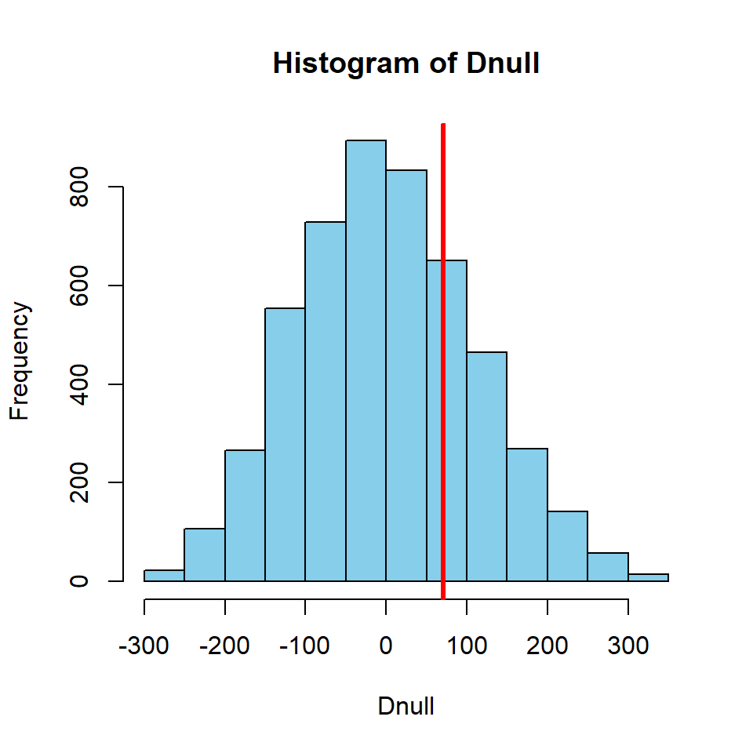
Obtain the two-tailed p-value:
## [1] 0.538Based on this, it appears there is no significant difference between the mean length of age 3 and 4 fish in this example.
3. Add a calculation of the p-value for a one-tailed test (i.e., that the difference in means is greater or less than zero). Steps 1 - 4 are the same: all you need is Dnull and Dobs. Don’t be afraid to Google this if you are confused.
To calculate the p-value for a one-tailed test (null hypothesis is that the mean length of age 4 is less than or equal to the mean length of age 3 fish):
## [1] 0.2634To test the opposite hypothesis (null hypothesis is that the mean length of age 4 fish is greater than or equal to the mean length of age 3 fish):
## [1] 0.7372Exercise 5 Solutions
First, load {dplyr} and read in the data:
## year sex age length
## 1 1966 Male 4 570
## 2 1966 Male 4 519
## 3 1966 Male 4 518
## 4 1966 Male 4 479
## 5 1966 Female 4 529
## 6 1966 Female 4 5601. Count the number of females that were sampled each year using the {dplyr} function n() within a summarize() call (Hint: n() works just like length - it counts the number of records).
Pipe dat to a filter() call to extract only females, then group_by() year, then count the number of records:
2. Calculate the proportion of females by year.
Do a similar task as in the previous question, but count all individuals each year, regardless of sex:
Then merge these two data sets:
Finally, calculate the fraction that were females:
3. Plot percent females over time. Does it look like the sex composition has changed over time?
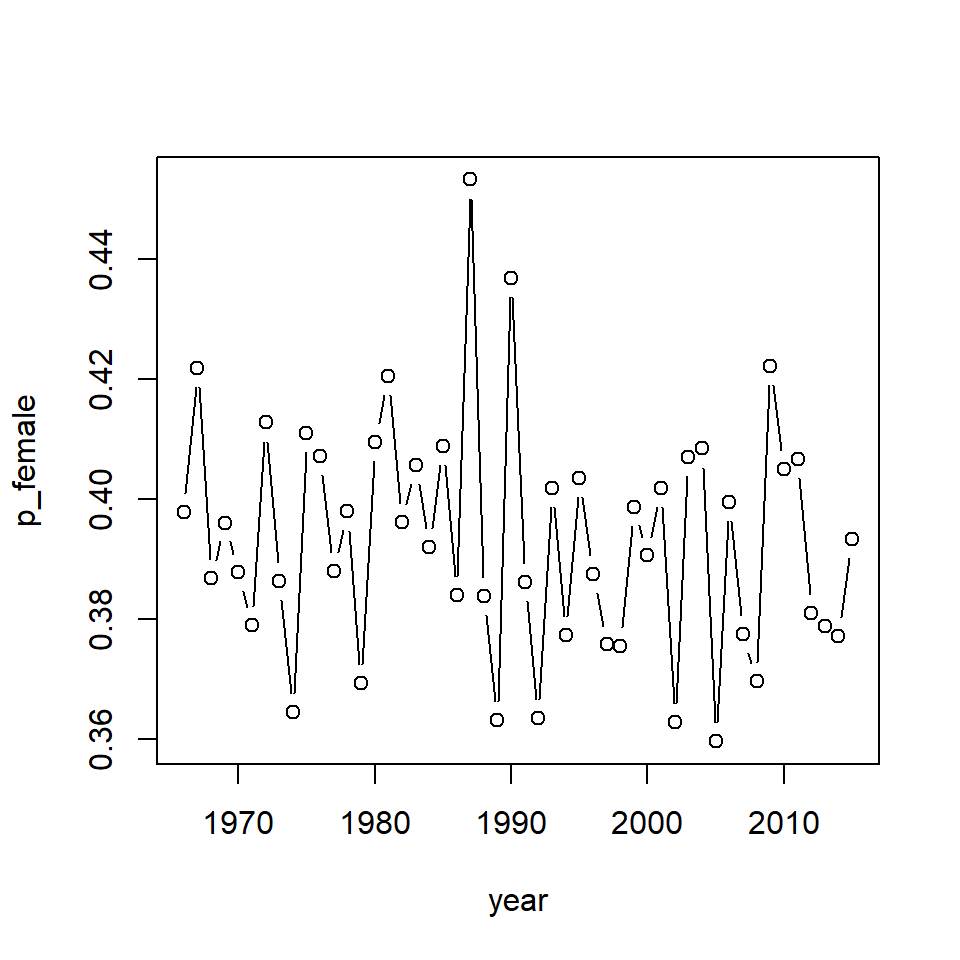
It seems that the proportion of females has varied randomly over time but has not systematically changed since the beginning of the data time series. Note that some of this variability is introduced by sampling.
4. Calculate mean length by age, sex, and year.
{dplyr} makes this relatively complex calculation easy and returns an intuitive data frame as output:
5. Come up with a way to plot a time series of mean length-at-age for both sexes. Does it look like mean length-at-age has changed over time for either sex?
# set up a 2x2 plotting device with specialized margins
par(mfrow = c(2,2), mar = c(2,2,2,2), oma = c(2,2,0,0))
# extract the unique ages
ages = unique(mean_length$age)
# use sapply() to "loop" over ages
sapply(ages, function(a) {
# create an empty plot
plot(1,1, type = "n", ann = F, xlim = range(dat$year),
ylim = range(filter(mean_length, age == a)$mean_length))
# add a title
title(paste("Age", a))
# draw on the lines for each sex
lines(mean_length ~ year, type = "b", pch = 16,
data = filter(mean_length, age == a & sex == "Male"))
lines(mean_length ~ year, type = "b", pch = 1, lty = 2,
data = filter(mean_length, age == a & sex == "Female"))
# draw a legend if the age is 4
if (a == 4) {
legend("topright", legend = c("Male", "Female"),
lty = c(1,2), pch = c(16,1), bty = "n")
}
})
# add on margin text for the shared axes
mtext(side = 1, outer = T, "Year")
mtext(side = 2, outer = T, "Mean Length (mm)")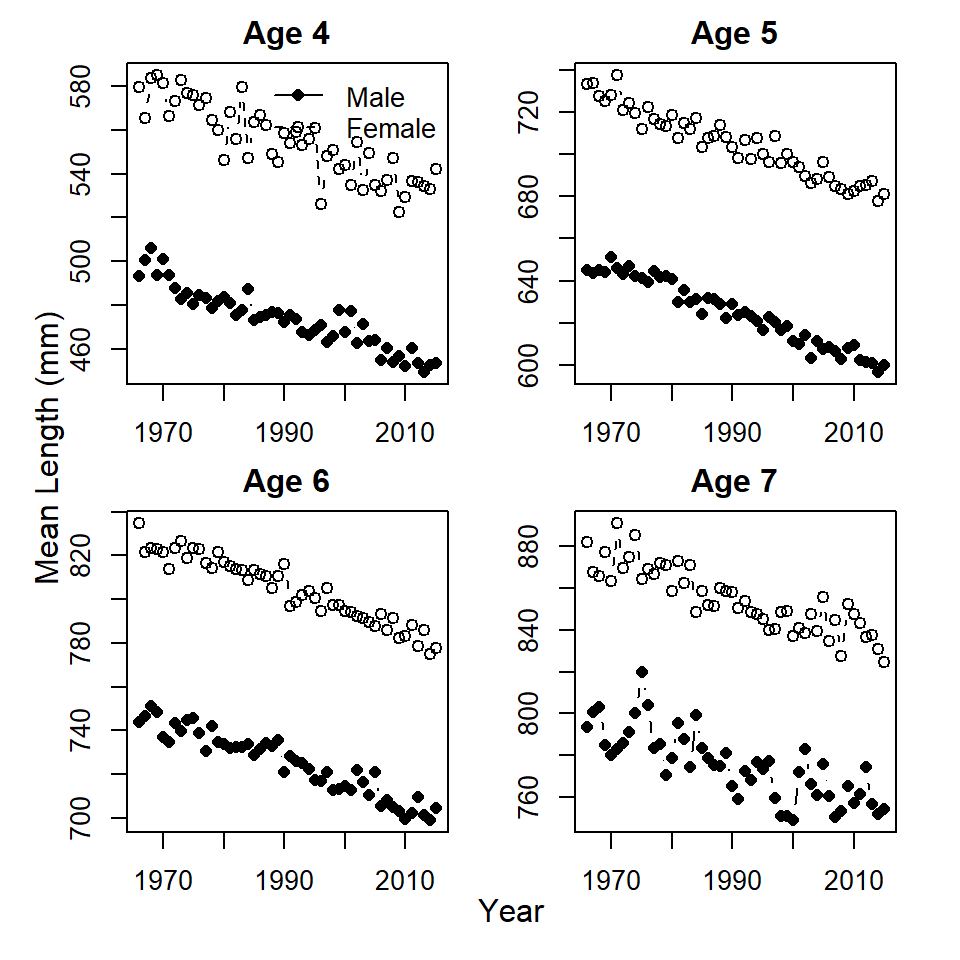
Bonus 1. Calculate the age composition by sex and year (what proportion of all the males in a year were age 4, age 5, age 6, age 7, and same for females).
This follows a similar workflow as in the calculation of the proportion of females:
# get the number by age and sex each year
n_age_samps = dat %>%
group_by(year, age, sex) %>%
summarize(age_samps = n())
# get the number by sex each year
n_tot_samps = dat %>%
group_by(year, sex) %>%
summarize(tot_samps = n())
# merge the two:
n_samps = merge(n_age_samps, n_tot_samps, by = c("year", "sex"))
# calculate the proportion at each age and sex:
n_samps = n_samps %>%
ungroup() %>%
mutate(age_comp = age_samps/tot_samps)Bonus 2. Plot the time series of age composition by sex and year. Does it look like age composition has changed over time?
Create the same plots as for Question 5, but with age composition instead of sex composition:
# set up a 2x2 plotting device with specialized margins
par(mfrow = c(2,2), mar = c(2,2,2,2), oma = c(2,2,0,0))
# extract the unique ages
ages = unique(n_samps$age)
# use sapply() to "loop" over ages
sapply(ages, function(a) {
# create an empty plot
plot(1,1, type = "n", ann = F, xlim = range(dat$year),
ylim = range(filter(n_samps, age == a)$age_comp) + c(0, 0.05))
# add a title
title(paste("Age", a))
# draw on the lines for each sex
lines(age_comp ~ year, type = "b", pch = 16,
data = filter(n_samps, age == a & sex == "Male"))
lines(age_comp ~ year, type = "b", pch = 1, lty = 2,
data = filter(n_samps, age == a & sex == "Female"))
# draw a legend if the age is 4
if (a == 4) {
legend("topleft", legend = c("Male", "Female"),
lty = c(1,2), pch = c(16,1), bty = "n")
}
})
# add on margin text for the shared axes
mtext(side = 1, outer = T, "Year")
mtext(side = 2, outer = T, "Age Composition by Sex")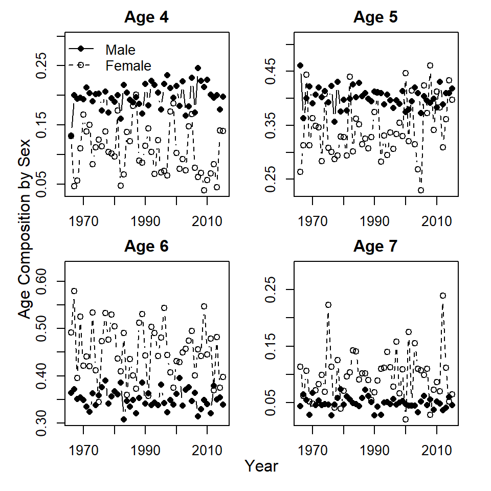
Exercise 6 Solutions
Note: these solutions assume you have the layers bear, stat, slovenia, railways, and cp as well as all of the packages used in Chapter 6 already loaded into your workspace.
## OGR data source with driver: ESRI Shapefile
## Source: "C:\Code\au-r-workshop\Data\Ch6\SVN_adm", layer: "SVN_adm0"
## with 1 features
## It has 70 fields
## Integer64 fields read as strings: ID_0 OBJECTID_1## OGR data source with driver: ESRI Shapefile
## Source: "C:\Code\au-r-workshop\Data\Ch6\railways", layer: "railways"
## with 214 features
## It has 3 fields
## Integer64 fields read as strings: osm_id## OGR data source with driver: ESRI Shapefile
## Source: "C:\Code\au-r-workshop\Data\Ch6\SVN_adm", layer: "SVN_adm1"
## with 12 features
## It has 9 fields
## Integer64 fields read as strings: ID_0 ID_11. Load the caves.shp shapefile (Republic of Slovenia 2018) from your working directory. Add the data to one of the maps of Slovenia you created in this chapter.
# load the caves file
caves = readOGR(dsn="./caves",layer="EPO_JAMEPoint")
# put all layers the same projection as bear data
caves = spTransform(caves, CRS(proj4string(bear)))
stats = spTransform(stats, CRS(proj4string(bear)))
slovenia = spTransform(slovenia, CRS(proj4string(bear)))
railways = spTransform(railways, CRS(proj4string(bear)))
# make the plot
par(mar = c(2,2,1,1))
plot(stats, border = "grey", axes = T,
xlim = bear@bbox[1,], # access the boundary box using @
ylim = bear@bbox[2,])
plot(slovenia, lwd = 3, add = T)
points(bear, pch = 16, cex = 0.5, col = alpha("blue", 0.5))
plot(railways, add = T, col = "red", lwd = 3)
# add the caves layer
plot(caves, add=T)## OGR data source with driver: ESRI Shapefile
## Source: "C:\Code\au-r-workshop\Data\Ch6\caves", layer: "EPO_JAMEPoint"
## with 32 features
## It has 2 fields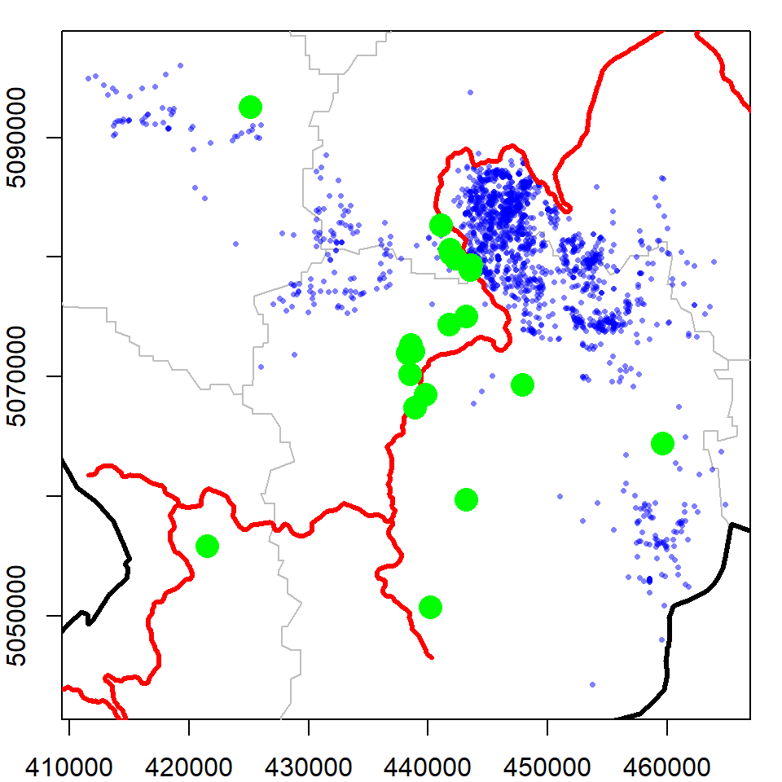
2. How many caves are there?
## [1] 323. How many caves are in each statistical area?
For this, you will need to add a field to your attribute table. Look back to Section 6.6.3 for details on how to do this.
library(maptools)
caves = spTransform(caves, proj4string(stats))
cavestats = over(caves, stats)
caves = spCbind(caves,cavestats$NAME_1)
table(caves$cavestats.NAME_1)##
## Goriška Jugovzhodna Slovenija Notranjsko-kraška
## 1 5 12
## Obalno-kraška Osrednjeslovenska
## 2 114. Which bear has the most caves in its homerange?
First, use the over() function to determine which homeranges have which caves (the returnList = T argument will show all of the polygons each point falls in).
Now just count how many caves were in each bear’s homerange (the bear names are the rownames of homecaves).
##
## jana nejc srecko
## 5 2 7Allaire, JJ, Yihui Xie, Jonathan McPherson, Javier Luraschi, Kevin Ushey, Aron Atkins, Hadley Wickham, Joe Cheng, and Winston Chang. 2018. Rmarkdown: Dynamic Documents for R. https://CRAN.R-project.org/package=rmarkdown.
Anderson, David R., Kenneth P. Burnham, and William L. Thompson. 2000. “Null Hypothesis Testing: Problems, Prevalence, and an Alternative.” The Journal of Wildlife Management 64 (4): 912–23. http://www.jstor.org/stable/3803199.
Bååth, Rasmus. 2018. Beepr: Easily Play Notification Sounds on Any Platform. https://CRAN.R-project.org/package=beepr.
Bivand, Roger, Tim Keitt, and Barry Rowlingson. 2018. Rgdal: Bindings for the ’Geospatial’ Data Abstraction Library. https://CRAN.R-project.org/package=rgdal.
Bivand, Roger, and Nicholas Lewin-Koh. 2018. Maptools: Tools for Handling Spatial Objects. https://CRAN.R-project.org/package=maptools.
Bivand, Roger, and Colin Rundel. 2018. Rgeos: Interface to Geometry Engine - Open Source (’Geos’). https://CRAN.R-project.org/package=rgeos.
Bolker, B. M. 2008. Ecological Models and Data in R. Princeton University Press. https://ms.mcmaster.ca/~bolker/emdbook/.
Boundaries, Global Administrative. 2018. “Slovenia Geopackage.” https://biogeo.ucdavis.edu/data/gadm3.6/gpkg/gadm36_SVN_gpkg.zip.
Calenge, C. 2006. “The Package Adehabitat for the R Software: Tool for the Analysis of Space and Habitat Use by Animals.” Ecological Modelling 197: 1035.
Cheng, Joe, Bhaskar Karambelkar, and Yihui Xie. 2018. Leaflet: Create Interactive Web Maps with the Javascript ’Leaflet’ Library. https://CRAN.R-project.org/package=leaflet.
Dunnington, Dewey. 2017. Prettymapr: Scale Bar, North Arrow, and Pretty Margins in R. https://CRAN.R-project.org/package=prettymapr.
Hijmans, Robert J. 2017. Raster: Geographic Data Analysis and Modeling. https://CRAN.R-project.org/package=raster.
Hijmans, Robert J., Steven Phillips, John Leathwick, and Jane Elith. 2017. Dismo: Species Distribution Modeling. https://CRAN.R-project.org/package=dismo.
Kaczensky, P., F. Knauer, M. Jonozovic, and M. Blazic. 1999. “Slovenian Brown Bear 1993-1999 Telemetry Data Set.” https://www.movebank.org/panel_embedded_movebank_webapp?destination=panel_embedded_movebank_webapp.
Kahle, David, and Hadley Wickham. 2016. Ggmap: Spatial Visualization with Ggplot2. https://CRAN.R-project.org/package=ggmap.
Kline, Paul A., and Thomas A. Flagg. 2014. “Putting the Red Back in Redfish Lake, 20 Years of Progress Toward Saving the Pacific Northwest’s Most Endangered Salmon Population.” Fisheries 39 (11): 488–500. https://doi.org/10.1080/03632415.2014.966087.
Lovelace, R., J. Nowosad, and J. Muenchow. 2018. Geocomputation with R. 1st ed. Boca Raton, Florida: Chapman; Hall/CRC. https://geocompr.robinlovelace.net/.
MapCruzin. 2018. “Slovenia Railways.” http://www.mapcruzin.com/download-shapefile/slovenia-railways-shape.zip.
Pebesma, Edzer, and Roger Bivand. 2018. Sp: Classes and Methods for Spatial Data. https://CRAN.R-project.org/package=sp.
R Core Team. 2018. R: A Language and Environment for Statistical Computing. Vienna, Austria: R Foundation for Statistical Computing. https://www.R-project.org/.
Republic of Slovenia, Environmental Agency of the. 2018. “Ecologically Important Areas (Caves).” http://gis.arso.gov.si/geoserver/ows?SERVICE=WFS&REQUEST=GetFeature&VERSION=1.1.0&TYPENAME=arso:EPO_JAME&PROPERTYNAME=SHAPE,ID_STEV,IME&OUTPUTFORMAT=SHAPE-ZIP&format_options=charset:UTF-8.
Sarkar, Deepayan. 2017. Lattice: Trellis Graphics for R. https://CRAN.R-project.org/package=lattice.
Walker, Kyle. 2015. “Convert Xy Coordinates to Lines in R.” Rpubs. https://rpubs.com/walkerke/points_to_line.
Wickham, Hadley. 2007. “Reshaping Data with the reshape Package.” Journal of Statistical Software 21 (12): 1–20. http://www.jstatsoft.org/v21/i12/.
———. 2015. Advanced R. 2nd ed. Boca Raton, Florida: Chapman; Hall/CRC. https://adv-r.hadley.nz/.
———. 2018. Scales: Scale Functions for Visualization. https://CRAN.R-project.org/package=scales.
Wickham, Hadley, and Winston Chang. 2016. Ggplot2: Create Elegant Data Visualisations Using the Grammar of Graphics. https://CRAN.R-project.org/package=ggplot2.
Wickham, Hadley, Romain Francois, Lionel Henry, and Kirill Müller. 2017. Dplyr: A Grammar of Data Manipulation. https://CRAN.R-project.org/package=dplyr.
Xie, Yihui. 2015. Dynamic Documents with R and Knitr. 2nd ed. Boca Raton, Florida: Chapman; Hall/CRC. http://yihui.name/knitr/.
———. 2018a. Bookdown: Authoring Books and Technical Documents with R Markdown. https://CRAN.R-project.org/package=bookdown.
———. 2018b. Knitr: A General-Purpose Package for Dynamic Report Generation in R. https://CRAN.R-project.org/package=knitr.
While it is possible to run R on its own, it is clunky. You are strongly advised to use the RStudio IDE (integrated development environment) given its compactness, neat features, code tools (like syntax and parentheses highlighting). This workshop will assume you are using RStudio↩︎
Many of the data sets used in this book were simulated by the author. Cases in which the data set used was not simulated are noted and a citation to the data source is provided. More details on the individual data sets can be found on the GitHub repository.↩︎
This is a footnote. If you’re viewing this on GitHub Pages, click the arrow to the right to return to the text↩︎
For some keyboard shortcuts, you may just need to swap out the CTRL keystroke for the CMD keystroke for a Mac computer↩︎
The formatting used here includes
##on output to denote code and output separately. You won’t see the##show up in your console.↩︎Hadley Wickham’s R code style guide: http://adv-r.had.co.nz/Style.html↩︎
The
cstands for concatenate, which basically means combine many smaller objects into one larger object↩︎" "or' 'both work as long as you use the same on the front and end of the element↩︎The coercion works this way because numbers can be expressed as characters, but a letter cannot be unambiguously expressed as a number.↩︎
Note that if your computer is configured for a Spanish-speaking country, Microsoft Excel might convert decimals to commas. This can really mess with reading in data - I would suggest changing the language of Excel if you find this to be the case.↩︎
You can nest ALL R functions, by the way.↩︎
An R package is a bunch of code that somebody has written and placed on the web for you to install, their use is first introduced in Chapter 5↩︎
cexis a multiplier:cex = 1.5says make the points 1.5 times as large as they would be by default.↩︎There are approximately 20 different
pchsettings:pch = 1is empty circles,pch = 16is filled circles, etc.↩︎xlimandylimboth require a numeric vector of length 2 where neither of the elements may be anNA.↩︎The default is points only,
type = 'l'is for lines only,type = 'o'is for points connected with lines, andtype = 'b'is for points and lines but with a small amount of separation between them.↩︎lty = 1is solid,lty = 2is dashed,lty = 3is dotted, etc. You can also specific it likelty = 'solid',lty = 'dotted', orlty = 'dotdash'.↩︎works just like
cex:lwd = 3codes for a line that is 3 times as thick as it would normally be↩︎there is a whole host of colors you can pass R by name, run
colors()to see for yourself↩︎A creel survey is a sampling program where fishers are asked questions about their fishing behavior in order to estimate effort and harvest.↩︎
Outliers can be turned off using the
outline = Fargument to theplot()function↩︎Which allows you to easily copy and paste the code between the model and plot functions, see Chapter 3↩︎
sapply()works likeapply(), except on vectors only so you don’t need to supply it with a1or2for rows or columns↩︎The residuals (\(\varepsilon_i\)) are the difference between the data point \(y_i\) and the model prediction \(\hat{y}_i\): \(\varepsilon_i=y_i-\hat{y}_i\)↩︎
General linear models are a member of this family↩︎
Odds are commonly expressed as a ratio. For example, if there is a 75% chance of rain, the odds of it raining are 3 to 1. In other words, the outcome of rain is three times as likely as its opposite: not raining↩︎
There is a free proof version online: https://ms.mcmaster.ca/~bolker/emdbook/book.pdf↩︎
English: \(x\) is a normal random variable with mean equal to 500 and standard deviation equal to 50↩︎
A functional response is the number of prey consumed by a predator at various prey densities↩︎
This function rises quickly at low prey densities, but saturates at high densities↩︎
Executing
?rnormor any other of the-norm()functions will take you to a page with info on all four function types for that distribution↩︎If
probdoesn’t sum to 1, then it will be rescaled:prob = prob/sum(prob)↩︎Google is an R programmer’s best friend. There is a massive online community for R, and if you have a question on something, it has almost certainly been asked somewhere on the web.↩︎
English: concluding there is no effect when there truly is one↩︎
In reality, these estimates would have substantial uncertainty that you would need to propagate through your harvest policy analysis. In this example, you will ignore this complication↩︎
The section on lexical scoping is found here: http://adv-r.had.co.nz/Functions.html#lexical-scoping↩︎
possibly in a yield-per-recruit analysis↩︎
E.g.,
"hatch", “Hatch”, and"HATCH"are all treated as different factor levels in R↩︎This is the fraction of all fish that came back each year that did so on or before a given day↩︎
It doesn’t look like much, but this information is incredibly important for fishery managers. It provides information on how much of the annual run has passed on each day. You can see that the rate of change is the fastest in the middle of the run, this corresponds to the major hump in the plots you made earlier (which were raw numbers by day). Of course during the run, the managers don’t know what proportion of the total run has passed because they don’t know the total number of fish that will come that season, but by characterizing the mean and variability of the different run completion proportions on each day in the past, they can have some idea of how much of the run to expect yet to come on any given day.↩︎
This is the perfect kind of thing to make an argument for in your function!↩︎
this term should not be confused with the vector data type in R↩︎
For more information on projected coordinate systems, follow this link: http://desktop.arcgis.com/en/arcmap/10.3/guide-books/map-projections/about-projected-coordinate-systems.htm↩︎
slots are components of S4 class objects. more on that here https://stackoverflow.com/questions/4713968/r-what-are-slots/4714080#4714080↩︎
This is not true of files created with
png()orjpeg()↩︎For projects with many user-defined functions, you may be better off creating a
./Functionsdirectory and housing multiple scripts there. Better yet, you can create your own package for personal use.↩︎If you’re viewing this in PDF format, go to: https://bstaton1.github.io/au-r-workshop/ch6.html#leaflet to view the interactive version. Better yet, install
{leaflet}, and try it yourself!↩︎
References
Republic of Slovenia, Environmental Agency of the. 2018. “Ecologically Important Areas (Caves).” http://gis.arso.gov.si/geoserver/ows?SERVICE=WFS&REQUEST=GetFeature&VERSION=1.1.0&TYPENAME=arso:EPO_JAME&PROPERTYNAME=SHAPE,ID_STEV,IME&OUTPUTFORMAT=SHAPE-ZIP&format_options=charset:UTF-8.